Bookshelf for Hattery
October 2012 / Interior Architecture
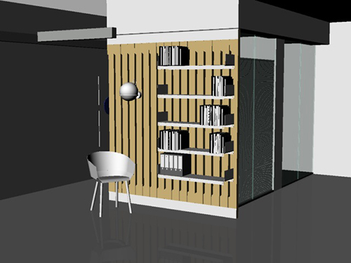
Folded metal shelves attach to wooden slats. The slats are shaped to allow for some visibility into the glass cubical behind them. The whole thing attaches to the ceiling and floor via metal U-beams.
San Francisco based company Hattery is a consultancy and venture fund for businesses determined to create positive change in the world. In October 2012 they approached me about designing and building their new office space and as a test, I proposed this bookshelf. They were very pleased with the results but unfortunately, we failed to agree on terms for execution.
The Problem:
This glass cubicle is not enjoyable to work in. There is no privacy, no storage and is adjacent to high traffic hallways.
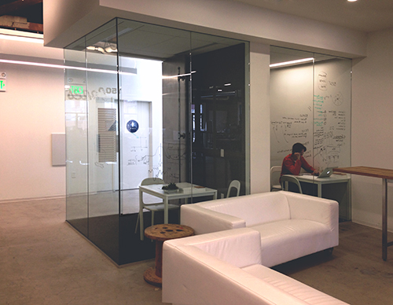
Taken with an iPhone by Hattery co-founder Joshua To.
Observations:
It's like a fish tank.. but for people. It turns work into a spectacle; which for some, may be fine but for many, is uncomfortable. Could a bookshelf provide privacy? At what point does the glass become frivolous?
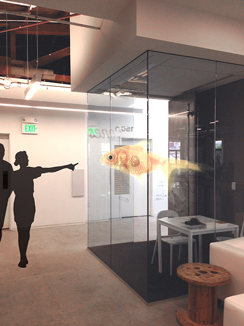
That is a big goldfish.
The 'old' aesthetic (seen in the rafters) & the 'new' (everything else) are starkly separated in this part of the office. Could the rustic qualities of the rafters be brought into the space?
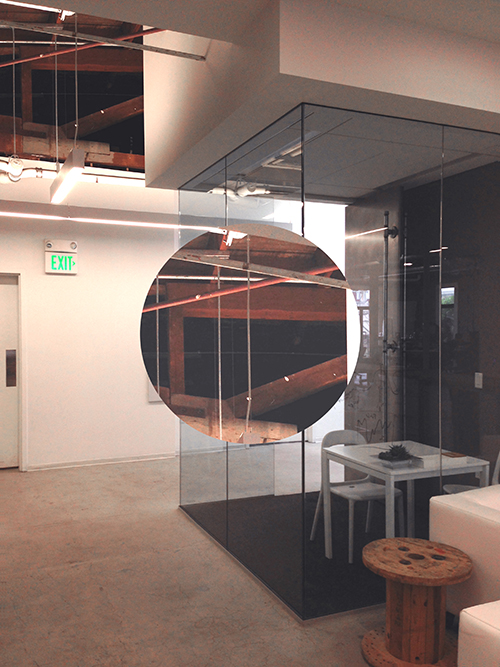
A visual sampling from the rafters brought into the space.
The Solution:
A bookshelf that: 1. Creates some privacy without diminishing people's awareness of the sorrounding spaces. 2. Creates new functionality in an under-utilized space. 3. Visually integrates the old and new architecture.
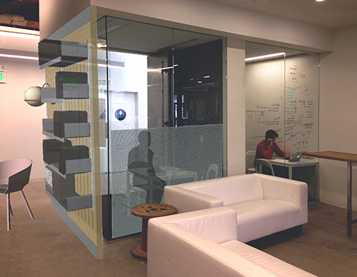
A rendering of the proposed solution.
Bottom-up blinds create options for privacy at all hours.
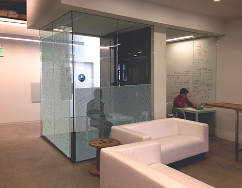
Bottom-up blinds allow occupants to write on the glass and maintain the focus that a visual barrier provides.
The fish tank effect is reversed by shaped slots in the vertical slats. Passersby are unlikely to peer through the bookshelf into the cubical. People in the cubical will maintain the office awareness they had before but gain a sense of privacy.
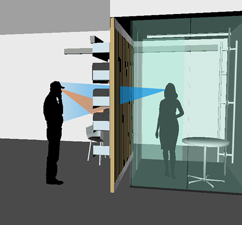
Illustration showing how the bookshelf will direct attention.
By including a lamp and chair, the bookshelf encourages people to stay and peruse but not for too long (like a plush couch does.)
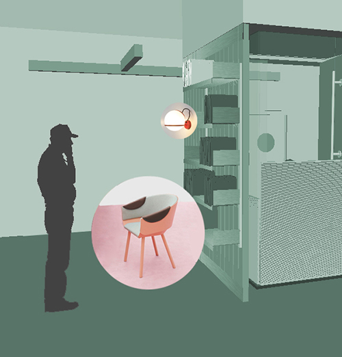
An attractive chair and lamp entice people to stay a bit.
The Houdini chair produced by e15 and designed by Stefan Diez. Wall lamp from Arteluce and designed by Gino Sarfatti.
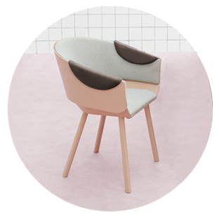
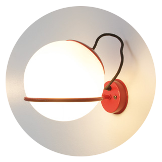
Wooden slats bring the warmth of the rafters into the workspace and assemble simply.
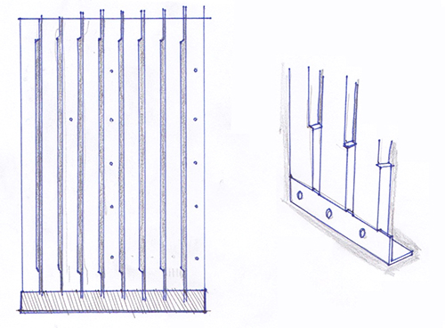
Note the pre-drilled holes for attaching shelves and wiring the wall lamp.
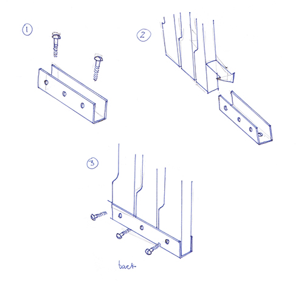
3 easy steps to install.
Inside-the-cube Variations:
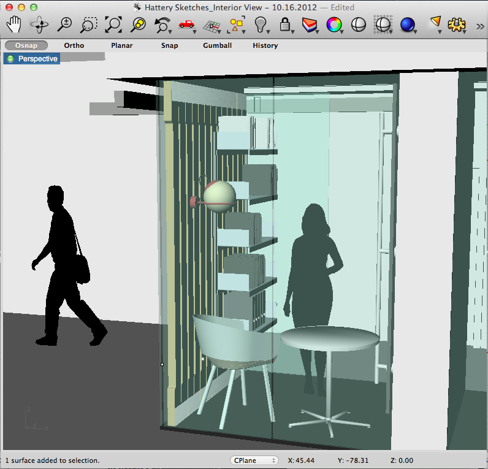
A tight fit but with maximized storage.
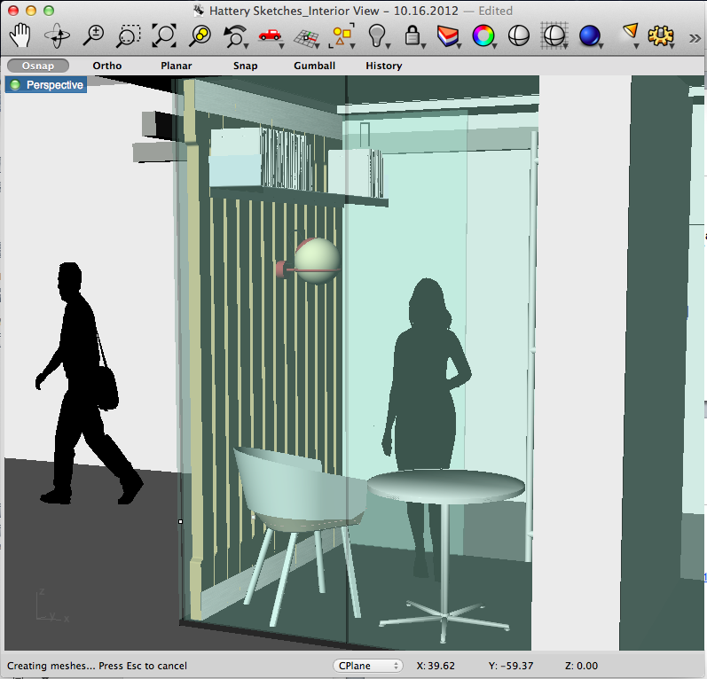
A comfortable fit but requires a step-stool.